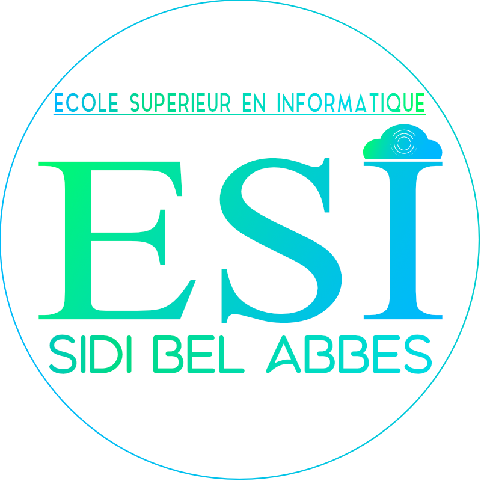

Présentation:

école de performance
- nombreux laboratiores pédagogique et de recherche.
- bibiothèque centrale et espace multimédia.
- partenariat avec le secteur socio-économique,les écoles nationales, les universités et à l'international.
- cursus et programmes de formation moderneset évolutifs.
- un parcours bi-diplomant(ingéniorat + master).

formation d'excelence
- encadrement de rang magistral : professeurs et maitres de conférences;nombreux jeunes docteurs motivés et hautement qualifiés.
- intervenants externes spécialisés pour assurer des ensignements, des conférences ou des ateliers pratiques ,a tous les niveaux de formation.
- accompagnement personnalisé des élèves ingéneurs dans leurs progression, leurs stages et leur projet proffessionnel.